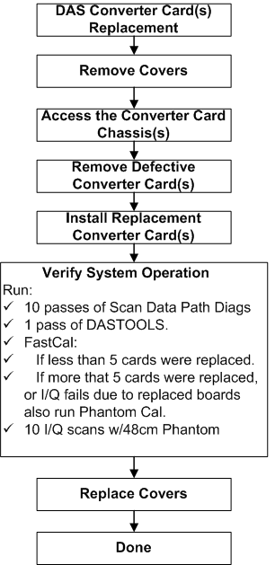
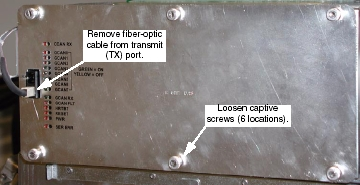
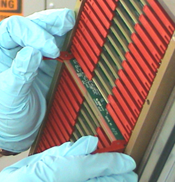

Operating Documentation
Direction 5196839-800, Rev# 6
RT16 and Xtra Service Info Adv
Operating Documentation |
| Required Persons | Preliminary Reqs | Procedure | Finalization |
|---|---|---|---|
| 1 | Timing Not Applicable | 30 mins | 90 mins |
Replace suspected faulty board and verify proper operation and Image Quality:
Illustration 1: Procedure Flow Chart

| Last Revised: | June 6, 2008 |
| Item | Qty | Effectivity | Part# | Manufacturer | |
|---|---|---|---|---|---|
| DAS/Detector Service Kit | 1 | - | 2344539 | - | |
| Field ESD Kit | 1 | - | - | - | |
| DAS/Detector Service kit | 1 | - | - | - | |
| Item | Qty | Effectivity | Part# | Manufacturer |
|---|---|---|---|---|
| Nitrile Protective Gloves | - | 2207303-6 (Large) | - | |
| - | - | - | 2207304-7 (Extra Large) | - |
| Item | Qty | Effectivity | Part# | Manufacturer | |
|---|---|---|---|---|---|
| DAS Converter Board | 1 | - | - | - | |
| Follow ALL required safety and PPE procedures customary for your organization, when working on this product. | |
| Condition | Reference | Eff |
|---|---|---|
Only trained service personnel should service the GE CT Scanner. | - | - |
| Follow ALL Electro-Static Discharge procedures. Always use ESD Wrist Strap and grounding cords. The use of a ground Monitor is suggested. | |
Position the table to its lowest position.
Remove gantry right side cover.
| Always turn OFF the HVDC before the 120 VAC. Turning OFF 120 VAC power before HVDC power can result in equipment damage. | |
Turn OFF Axial Enable, HVDC, and 120VAC switches on the Service Switch panel.
Lock the gantry in position, using the rotational lock.
Remove appropriate chassis cover.
When working in the Right chassis, the fiber-optic cable must first be removed from the Transmit (“TX”) port (see Illustration 2).
Left and Right chassis have 6 captive screws.
Center chassis has 8 captive screws.
Illustration 2: Right DAS Chassis

Put on Protective Gloves.
Slide Converter board out of chassis.
Lift both red ejection tabs and the board will disengage from backplane connection.
Illustration 3: Use Ejector Tabs to Remove Converter Boards from Chassis

Continue sliding board straight out and place into anti-static bag.
| Follow ALL Electro-Static Discharge procedures. Always use ESD Wrist Strap and grounding cords. The use of a ground Monitor is suggested. | |
Remove New Converter Board from anti-static bag.
Align Converter board edges to card guides in Chassis.
Slide the board into the chassis until red ejector tabs align with the card guides ( Illustration 3).
Fold the Red tabs over to push board into place. Press in on tabs to fully seat board into the backplane connector - the board should move inward an additional millimeter (approximately).
Illustration 4: Seat Convertor with your Thumbs

| Failure to fully seat a converter board into DAS backplane may result in the failure of all 128 channels in that converter board. | |
Turn the Gantry 120V power ON, and verify no failures during power-up self-tests, via DCB LED status or System error log.
Reinstall the Converter board chassis cover by first engaging all screws, and then tightening them.
If replacing boards in the right DAS chassis, reconnect the fiber-optic cable to the transmit (TX) port (see Illustration 2).
Disengage the rotational lock.
Turn on Axial and HVDC switches.
Perform a DAS Reset from the Reset Menu.
Depending on the fault, let the board warm-up five (5) minutes to verify it fixed the problem, but at least 1 hour before DASTools, FastCal, or Image Quality scans. A cold board may fail Offset Drift or Pop Noise until it is in normal operating temperature ranges.
Perform DAS Gain Calibration
Verify proper functionality:
Run at least 10 passes of Scan Data Path Diagnostic from Converter Boards.
Run 1 pass of DASTOOLS.
Run FastCal and Phantom Cal, then second FastCal, if more than five (5) boards replaced.
Run Phantom Cal, then run FastCal, if more than five (5) boards replaced or if I/Q fails due to replaced boards.
Upon running FastCal the first time, Daily IQ check may fail, and can generally be ignored, provided the images look good.
Take 10 I/Q scans of the 48cm phantom.
Verify fault or reason to replace the board now passes.
Reassemble the gantry covers.